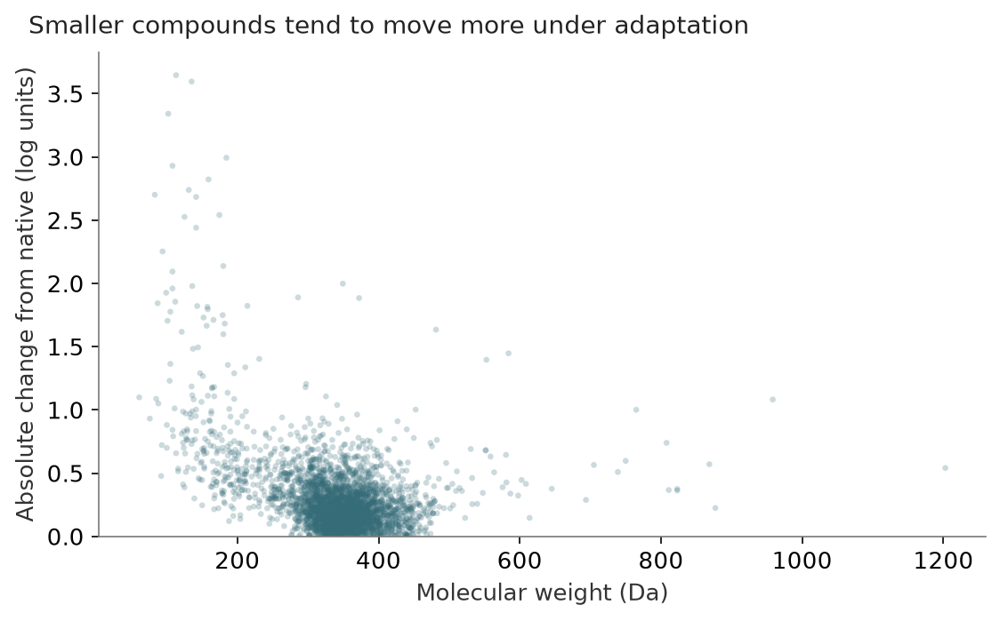

Movement, chemistry and native feature geometry
Status: completed · Synthesis updated 2026-09-08. Original dates and immutable protocol history remain in the source evidence.
Question
What distinguishes compounds whose predictions change?

PNG · SVG · Plotted data · Figure provenance
{kind=link}
{kind=link}
Design and fitted/frozen flow
Saved native and adapted predictions + actual FIT-neighbor identities + MW/charge + frozen 768D native vectors → descriptive ranks, strata and PCA; nothing fitted for prospective prediction.
Results
Large movers are not merely closest FIT neighbors. Smaller compounds move more; native feature norm is associated with movement more strongly than accuracy improvement. Native PCA’s first component captures 66.8% of variance.
Implication and limits
Full-cohort PCA is descriptive. Adapted internal tensors were not analyzed; neither feature norm nor proximity proves mechanism. Low MW and low potency are different variables.
All evidence is retrospective. Historical budgets, splits and raw versus uncertainty-weighted scores must remain distinct.
Source evidence
Original reports and exact tables (historical report links may refer to unbundled files).
{kind=link}